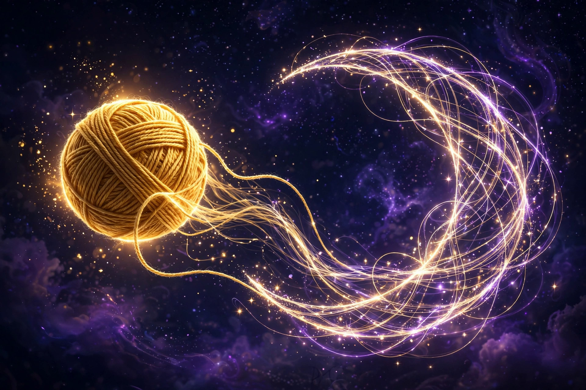
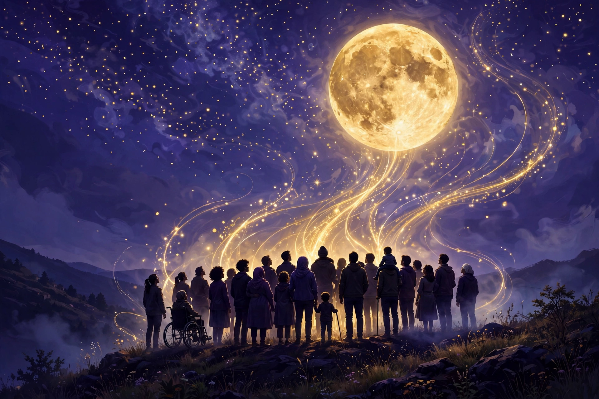

ELYSIA LUNAR
The moon of Elysia has shattered, and its five great seas drift apart — held together only by golden moon-thread. Become a Drifter, sail the thread between realms, and fight for your Coven under a moon that changes the world every 28 days.
A seasonal MMORPG where the moon itself is the game master. Every system below is designed around one idea: the world resets with the moon, but what you truly own never disappears.
Seasons follow the real phases of the moon. New Moon opens world events, Waxing brings Coven wars, Full Moon unlocks the raid realm and the Colosseum finals, and Waning locks the rankings.
Guilds of up to 40 Drifters with a shared hall and vault. Fight for territory on the Tidefall Coast and finish in the Top 10 Covens of the cycle.
The personal arena ladder. Climb into the Top 300 before rankings lock on day 27 and take home season honours — titles, cosmetics, and a share of the cycle's $SIA rewards allocation.
When a cycle ends, levels reset and ordinary gear becomes Legacy Thread — but Moon Relics, titles and your Coven persist forever. Nothing you truly own is ever deleted.
After the Pale Sundering, the moon's five maria became floating realms stitched together by moon-thread. Each has its own role in your journey.
| Realm | Role | What happens there |
|---|---|---|
| Mare of First Light | Starter realm | Gentle tides, the Drifter tutorial, and your first world boss. |
| Golden Thread Fields | Crafting heartland | Gathering, thread-crafting, and the player-driven materials economy. |
| Obsidian Highlands | High-level PvE | Elite hunts and rotating world bosses for geared parties. |
| Tidefall Coast | Coven war front | Territory control battles between Covens during the Waxing phase. |
| The Pale Wastes | Endgame raid realm | Opens only at Full Moon. The hardest fights in Elysia — and the best loot. |
Every account starts free with a Drifter of any class. Optional NFT Moon Relics add skins and relic gear — cosmetics and convenience, never power a free player cannot match through play.
Melee DPS. Lunar combo chains that grow stronger as the cycle moves toward Full Moon.
Caster DPS. Tide spells keyed to the current phase — plan your burst around the moon.
Healer and support. Weaves moon-thread into healing and can stitch a fallen ally back into the fight.
Ranged DPS. Marks targets from the dark; devastating burst during the Full Moon phase.
Tank. Shields of moon-stone and a taunt aura that holds the line for the whole party.
Each 28-day Lunar Cycle moves through the same four phases — so every player, new or veteran, always knows what the moon brings next.
| Phase | Days | Focus |
|---|---|---|
| New Moon | 1–3 | World events open, double gathering, cycle quests |
| Waxing | 4–14 | Coven wars for Tidefall Coast territory |
| Full Moon | 15 | Colosseum finals + Pale Wastes raid opens |
| Waning | 16–28 | Arena grind; rankings lock day 27; Moonfall Reset |


Elysia Lunar the game is built around Elysia Lunar the token. $SIA has a fixed supply of 1,000,000,000 with no mint function — the game creates no new tokens, ever. 750,000,000 $SIA is locked in a vesting vault.
In-game, $SIA is the premium currency for Moon Relic minting and cosmetics, and the currency of season rewards. The everyday in-game currency is Moonshards, earned from the arena, dailies and world events, with a published per-cycle issuance that can only decrease over time.
Free to play, forever. The cash shop sells cosmetics and convenience only — never power.
Is the game playable now?
No — Elysia Lunar is in development. This site is the concept and design phase; a playable browser beta (one realm, three classes, arena ladder) comes next, then the full five-realm launch and Cycle 1.
Do I need to buy anything to play?
No. Every account starts with a free Drifter character. Moon Relics are optional.
What happens to my items when a season ends?
Levels reset and ordinary gear converts to Legacy Thread (prestige currency). Moon Relics, titles and Coven membership are permanent.
Where are announcements posted?
Only on the official X account, @ElysiaLunarYarn. Beware of impersonators.